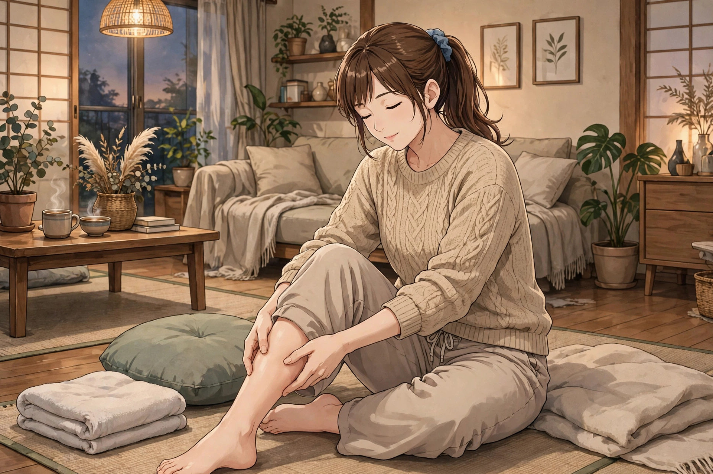
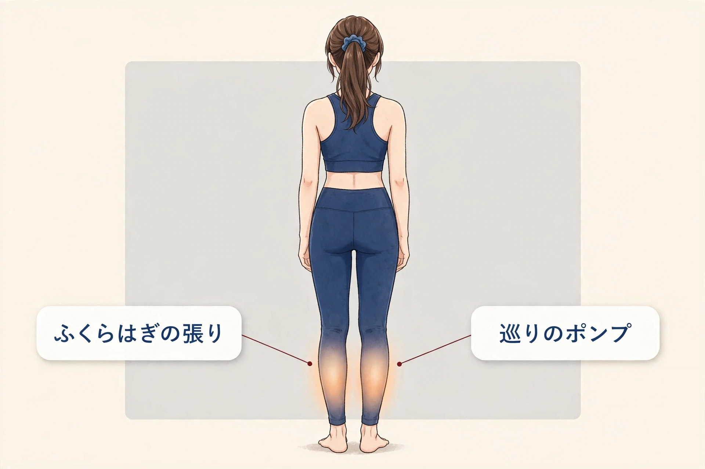

ふくらはぎの張り
美容整体ステラ・ポラリス東三国｜大阪市淀川区東三国・東三国駅徒歩5分・女性向け

パンパンに張ったふくらはぎをゆるめて、軽やかな脚へ
夕方になるとふくらはぎがパンパンに張る、朝起きても脚の重さが抜けていない、触ると筋肉が固く盛り上がっている——ふくらはぎの張りは、立ち仕事や歩く機会の多い女性に多いお悩みです。ふくらはぎは、立つ・歩くといった動きを支えるだけでなく、脚の血の巡りを心臓へ押し戻すポンプのような役割も担っています。同じ姿勢が続いたり、歩き方のクセで負担が偏ったりすると、張りや重さが残りやすいと言われています。このページでは、ふくらはぎが張る背景と、夕方でも軽く感じられる脚を目指す当サロンでのケア、ご自宅でできるセルフケアをご案内します。まずは下のチェックで、ご自身の状態を確かめてみてください。
ご予約はこちら（Coubic）こんなお悩みありませんか
- 夕方になると、ふくらはぎがパンパンに張って重い
- 朝起きたときから、脚がすっきりしていない感じがする
- ふくらはぎを触ると、固く盛り上がって押すと痛気持ちいい
- 立ち仕事や歩いた日の夜は、とくに張りが強い
- 靴下の跡が残りやすく、脚がむくんで見える
- 歩くとき、ふくらはぎばかりに力が入る感じがする
- 夜中に脚がつりそうになることがある
当てはまる項目が多いほど、ふくらはぎへの負担の偏りと、巡りの滞りが重なっている目安とされています。ふくらはぎの張りは、足首の動きや歩き方、骨盤からの脚のラインとも関わります。次のセルフチェックで、ご自身の張りの傾向を確かめてみましょう。
簡単セルフチェック（ふくらはぎのセルフチェック）
立った姿勢と触った感覚で、ふくらはぎの状態を見る簡単な方法です。
- 立った状態で、ふくらはぎの一番太い部分を両手で包むように触ります。固さや盛り上がり方を左右で比べます。
- つま先立ちを5回ゆっくり行います。張りの強い側や、動きが重く感じる側がないかを確認します。
- 椅子に座って足首を大きく回します。回しにくい方向がある場合は、足首まわりの動きの硬さも関わっている目安と言われています。
※これは診断ではありません。ご自身の状態の傾向を知る目安としてお使いください。
ふくらはぎの張りの原因と仕組み
脚のポンプ役としての働き
ふくらはぎの筋肉は、収縮とゆるみを繰り返すことで、脚に下りてきた血の巡りを上へ押し戻すポンプのような役割を担っています。ところが、筋肉が張って硬い状態が続くと、ポンプの動きが小さくなり、巡りが滞りやすくなると言われています。図1のように、張りと巡りの滞りは互いに関わり合い、夕方のパンパン感や重さにつながります。

図1 ふくらはぎの張りは、筋肉の硬さによるポンプの働きの低下と、巡りの滞りが重なって感じられやすくなります。体の状態には個人差があります。
立ちっぱなし・座りっぱなしの影響
立ち仕事で同じ場所に立ち続ける姿勢も、デスクワークで座り続ける姿勢も、ふくらはぎの筋肉をほとんど動かさない点では共通しています。動かさない時間が長いほど、筋肉は張りを保ったままになり、巡りを押し戻す働きも弱くなりがちです。夕方に靴がきつく感じるのは、この巡りの滞りと関わります。
歩き方と負担の偏り
歩くとき、つま先で地面を蹴る動きが強い歩き方や、かかとをあまり使わない歩き方では、ふくらはぎの外側や中央に負担が偏りやすくなります。骨盤の傾きや足首の硬さも、負担の偏りに関わります。張る場所がいつも同じ側、同じ部分に寄っている場合は、歩き方や姿勢のクセが重なっている目安になります。
むくみとラインへの広がり
巡りが滞ると、余分な水分が脚にたまりやすくなり、むくみとして見え方にも表れます。ふくらはぎが張って太く見えると、脚全体のラインが重く見えがちです。張りがゆるみ、巡りが流れやすい状態になると、夕方でも脚が軽く、ラインもすっきり見えやすくなります。
セルフケアで足りる場合・サロンケアが向く場合
足首回しやふくらはぎのストレッチをしたあとに脚が軽く感じる場合は、まずご自宅でのセルフケアを続けて様子を見る方法があります。一方で、触ると岩のように固い、朝になっても重さが抜けない、片側だけ張りが強いという場合は、サロンでのケアが向いている目安になります。サロンでは、ふくらはぎだけでなく足首や骨盤からの脚のラインも合わせて整え、夕方でも軽く感じられる脚を目指します。今の状態に合わせて選ぶことが大切です。
当サロンでのケア
当サロンのふくらはぎケアは、「夕方のパンパン感がやわらぎ、脚が軽くすっきり見える状態」を目指す組み立てです。まず張りの出ている部分と歩き方のクセを一緒に確認し、部位と目的に合わせて3つの手技を組み合わせます。
美容整体：骨盤の傾きと脚のラインを整え、ふくらはぎに負担が偏りにくい土台をつくることを目的に。足首の動きも合わせて整え、歩きやすい姿勢を目指すお手伝いをします。
アロマオイルマッサージ：ふくらはぎから足裏、脚全体をオイルでゆるめ、巡りが流れやすい状態を目指します。脚が軽くなるような感覚が得られやすい、リラックス感の高いケアです。
もみほぐし：固く盛り上がりやすいふくらはぎの中央や外側をほぐし、パンパン感が抜けて脚が軽くなる感覚を目指して進めます。
ケアを通して目指すのは、こんな変化です。
- 夕方のパンパン感がやわらぎ、脚が軽く感じる状態へ
- ふくらはぎがゆるみ、触ると柔らかく感じる状態へ
- 巡りが流れやすくなり、むくみが気になりにくい脚へ
- 足首が動きやすくなり、歩くときの蹴り出しが軽い感覚へ
- ふくらはぎのラインがすっきり見え、靴が楽に履ける状態へ
施術の仕上げには、足首回しやふくらはぎを伸ばすコツと、仕事の合間に取り入れやすい巡りの促し方もお伝えします。ふくらはぎの張りは日々の負担の積み重ねで変わるため、施術とセルフケアを合わせることが、軽い脚を保つ土台になります。強さは途中でも調整できますので、遠慮なくお声がけください。

施術の流れ
ご来店後、気になる部位やお悩み、ご希望の強さなどをうかがいます。完全個室のため、周りを気にせずお話しいただけます。
ふくらはぎの張りの出ている部分や足首の動き、歩き方のクセなどを一緒に確認し、その日の状態に合わせた施術の進め方をご案内します。
美容整体を中心に、ご希望に応じてアロマオイルマッサージ、もみほぐしを組み合わせて進めます。強さは途中でも調整できます。
施術後の状態を確認し、ご自宅で続けやすいセルフケアのポイントをお伝えします。次回の目安についても、ご希望があればご案内します。
料金
| コース | 通常価格 | キャンペーン価格（12/25まで） |
|---|---|---|
| 80分 | 8,000円 | 3,000円 |
| 100分 | 10,000円 | 4,000円 |
| 120分 | 12,000円 | 5,000円 |
クリスマスキャンペーンは12月25日まで、ご新規様もリピーターの方も対象です。施術内容は当日の状態とご希望に合わせて組み立てます。
ご自宅でできるセルフケア
- 足首回し：椅子に座って片脚を少し浮かせ、足首で大きな円を描くように左右各10回回します。巡りを促すつもりで、ゆっくり行ってください。
- ふくらはぎストレッチ：壁に両手をつき、片脚を後ろに引いてかかとを床につけたまま30秒キープ。左右2セット、痛みのない範囲で行います。
- つま先立ち体操：立った状態でゆっくりつま先立ちになり、5秒キープして下ろします。10回を1セットとして、ポンプの働きを目覚めさせるつもりで行ってください。
- 温めて巡りを助ける習慣：湯船に脚まで浸かる、足湯をするなど、温める習慣も夕方の張り対策になります。就寝前の着圧ソックスの使用も、巡りを助ける工夫の一つです。
ご自宅でのケアに：セルフケア資料ライブラリ（無料）
このお悩みに合わせたセルフケアの考え方を、無料の資料ライブラリでご紹介しています。
セルフケア資料ライブラリを開く →
受診の目安
ふくらはぎの痛みに加えて、片側だけの急な腫れや熱感がある場合、皮膚の色の変化や強い痛みが続く場合は、施術の前に医療機関への受診をおすすめします。脚のしびれや力が入りにくい感じがある場合も、まずは医療機関でご相談ください。
よくある質問
Q. 初めてでも大丈夫ですか？
はい。当サロンは完全予約制・完全個室で、1日3組までのご案内です。最初にカウンセリングでふくらはぎの張りや歩き方のクセをうかがい、無理のない内容から始めます。施術の前後で「脚が軽い」「ふくらはぎが柔らかい感じがする」といった感覚の違いを一緒に確認しながら進めますので、初めての方も安心してご利用いただけます。
Q. 施術は痛いですか？
強さは、ご希望をうかがいながら調整します。張ったふくらはぎを無理に押しほぐすのではなく、お身体の状態に合わせた圧で、張りがゆるんでいく感覚を味わいながら受けていただけます。感じ方には個人差がありますので、施術中も遠慮なくお声がけください。
Q. コースはどう選べばいいですか？
80分・100分・120分のコースがあり、ケアしたい部位の広さやお時間のご都合に合わせて選べます。ふくらはぎのケアで、脚全体から骨盤まわりまでゆっくり整えたい方には、100分が選ばれることが多いコースです。迷われる場合は、ご予約の際にお気軽にご相談ください。
Q. 場所と予約方法を教えてください。
大阪市淀川区東三国、東三国駅から徒歩5分です。完全予約制のため、予約サイト（Coubic）またはLINE公式アカウントからご予約をお願いしています。
Q. 男性も受けられますか？
当サロンは女性向けのため、男性の方は、同じ東三国の男性専用整体院「北辰堂」をご案内しています。
施術者について
平賀建人（施術歴30年）
鍼灸師・登録販売者・アロマセラピスト・パーソナルトレーナーの資格を持ち、美容整体を中心に、アロマオイルマッサージ、もみほぐしを、その日の状態とご希望に合わせて組み合わせて施術します。このページの内容は、施術者の知識と経験をもとに作成しています。

料金・ご予約
ご新規様もリピーターの方も 12/25まで
80分 3,000円／100分 4,000円／120分 5,000円
通常価格は80分8,000円／100分10,000円／120分12,000円です。施術内容はご希望に合わせて組み立てます。
営業時間：月〜土 17:00〜23:00／日 10:00〜23:00（完全予約制）｜電話：080-2468-3086
大阪府大阪市淀川区東三国2丁目25番4号101（東三国駅徒歩5分）
専門解説で詳しく見る
仕組みから詳しく知りたい方は、専門解説シリーズのこちらの記事もあわせてご覧ください。